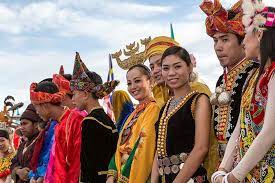
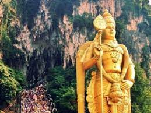
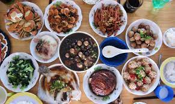

Thaipusian Malaysian Celebration
Malaysians love to celebrate everything in life. The fact that our society is a hotpot of vibrant cultural diversity and religious tolerance makes it obvious that many Malaysian celebrations evolve around these rich traditions. They call this the mardi gras of celebrations! This is a Hindu religious celebration performed with grand street processions, and smashing of coconuts, in homage to Lord Murugan’s victory over the evil spirit Soorapadam and is a much anticipated, unique and colourful festival in Malaysia. Profound pomp, mesmerising chants and rhythmic drumbeats accompany thousands of bare-footed devotees and penitents with their bodies pierced with spikes and hooks from ornate ‘kavadis’ that they carry towards the hill-top temples. It is said that the temples are situated on hill-tops as Lord Murugan’s abode is on the hill-top.

